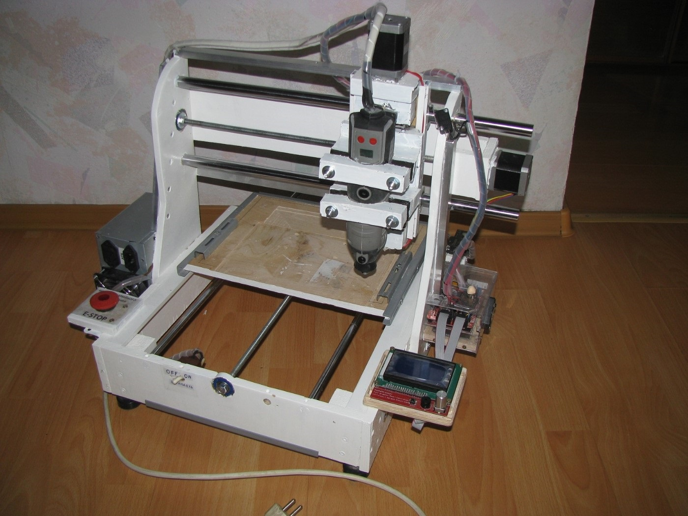

TES Servis - Ardiuno edit

Youtube канал - Подробно обо всём
Данный канал посвящён различным самоделкам, сделанными своими руками, и обзору покупок для них. А так же, различные проекты на Ардуино
(Arduino), в том числе - максимально дешёвый в постройке и достаточно точный ЧПУ фрезерный станок для домашнего использования (фрезерование материалов вплоть до алюминия, 3D печать и сканирование).
The given channel is devoted to various self-made, made by own hands, and review of purchases for them. And also, various projects in Arduino, including - the cheapest in the construction and quite accurate CNC milling machine for home use (milling materials up to aluminum, 3D printing and scanning).